I've been in this sustainable textile business long enough to know that there is no better way to care for the planet than using what we already have. No eco-fashion company will ever come close to the minimal environmental impact that upcycling second-hand textiles has. That being said, I know we need innovation, we need companies setting a good example, and, of course, it's not feasible for everyone to only wear second-hand from now on. I also work with new textiles because promoting organic fibers and local production is one of my goals. But I am turning towards second-hand more and more because it offers low-stakes fun and the possibility of great surprises.
I recently found a few cool pieces in a second-hand basket at Textilhafen Berlin. Made with natural fibers and all white, they were predestined to fall into my hands so that I could help them get a second life. I recorded the process of upcycling them, and today I will share the tutorial for one of the patterns.
What you need
I accumulated quite a stash of beautiful fabrics over the years, both new and reclaimed. So this year I am trying to work with the materials I have on hand. Partially because the recession forced me to rethink my spending, and partially because I know that limitations tend to push creativity.
I chose the method that is the simplest to replicate. To make this scrunched pattern, you will literally only need three things: rusty nails (or steel wool), white vinegar, and a tannin-rich dye. There are many dyes that are rich in tannins; one that you probably already have at home is black tea. You can also use acorns, alder cones, avocado stones, oak galls or leaves, and sumac leaves, just to name a few. A plastic bucket might come in handy, and I would discourage you from using your kitchen utensils. Please wear gloves — iron might dry your skin.
Make iron water
The mordant I used for this project is iron acetate, which is much gentler on fabric than iron crystals (iron sulfate). It is fairly easy to make, but it needs some time to develop, so make it in advance. Put a few rusty nails into a jar, or use 2.5g of steel wool as I did, and cover with around 100ml of white vinegar. The vinegar I use is a solution of 25%. Put a lid on but don't close it tight. Let it sit for around two weeks until the iron infuses the vinegar.
This amount of iron water allows for making around 10L of the mordant bath. If you start with a weaker solution, you will have to dilute it less later on. For example, 5% will give you 2L of mordant.
Prepare the fibers
Working with second-hand clothes means they've been washed enough to remove all the additives and protective layers. They don't need to be scoured anymore, but you can rinse them with just water. If there are any oily stains, they will be enhanced by dyeing, which I like to plan for and use as a feature. If that's not your thing, scour them like regular new fibers (cotton and linen — cook at around 90°C with a spoon of washing soda). Please remember that only natural fibers like cotton, linen, wool, silk, etc. can be dyed with plants. When working with wool and silk, keep in mind that they get damaged when exposed to high differences in temperatures. For my project, I am working with 100% cotton.
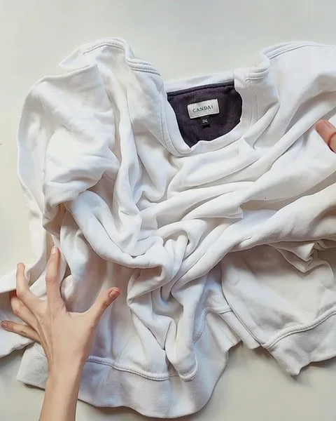
Scrunch it well
After your iron water has developed, you can proceed with dyeing. Lay the fabric flat on a table and start scrunching the sides towards the middle. I used big rubber bands to hold it together. You can also use a piece of string or a long strip of fabric, or tie a muslin cloth around it. It shouldn't be too tight, unless you want the result to stay mostly white, but also not too loose, otherwise there will be no resist pattern possible.
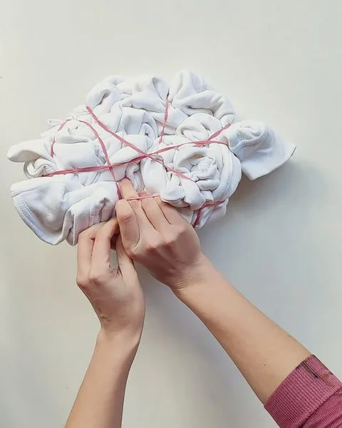
Prepare iron acetate mordant
To prepare the mordant, I add my iron water to 10L of warm water, straining it through a coffee filter. I wanted to make sure all tiny bits of iron are separated. I keep the mordant in a plastic bucket. It can be reused for other projects you have planned, but unfortunately, it has a short shelf life. I usually make sure to use it in one day.
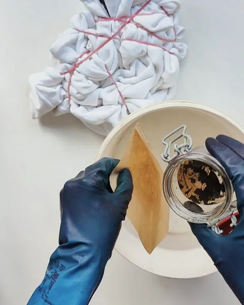
Mordant the piece
I didn't pre-soak the fibers, because that would make the mordant penetrate them further. I add a dry, scrunched sweatshirt to the mordanting bath, squeeze out the bubbles, and let it sit there for at least one hour. You can also do it the other way round — first dye the fibers, then mordant them after. The difference is that there would be fewer rusty lines visible on the final piece, as the iron water would bind with the dye before it came to the very edge of the dyed color. It would have left unmodified dye marks visible at the edges instead. No one way to do it. I wanted some rust to color my piece, so that's why I did it in this order.
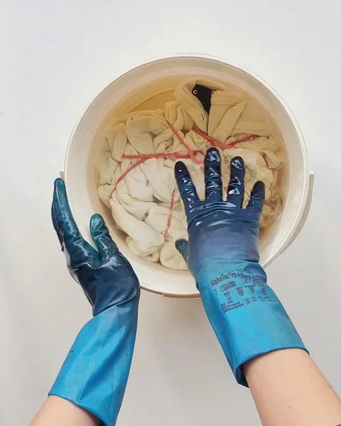
Extract your dye
For this project, I worked with cutch (a tannin-rich tree). I cooked it in a small amount of water for an hour to dissolve the dye. Then I sieved it through a piece of cloth to catch all the loose parts of the plant. I used around 20g of pulverized dye. I usually eyeball the amounts. For tea, I would probably use around five tablespoons. Once the concentrated dye is prepared, you can add enough hot water for it to be able to cover your piece.
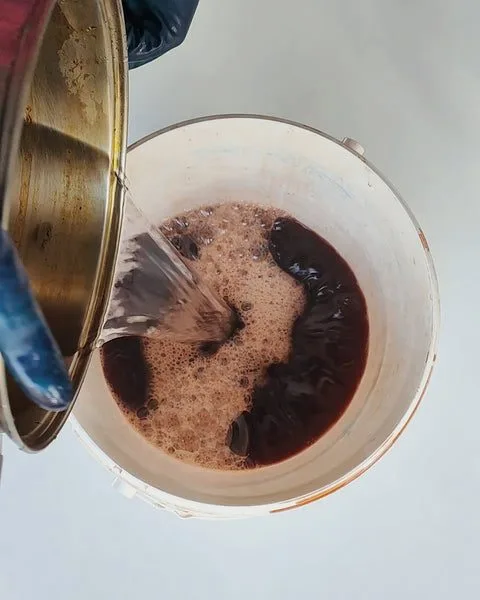
Dye the pieces
Time for the actual dyeing. Take the piece out of your mordanting bath and rinse carefully. Then place it in the dye bath and again, leave it there for at least one hour. Make sure it's immersed completely. Because we're not using any additional heat, it will take time for the dye to bond with the mordant. Leaving it in there overnight will give you an even stronger color, but I never have that much patience.
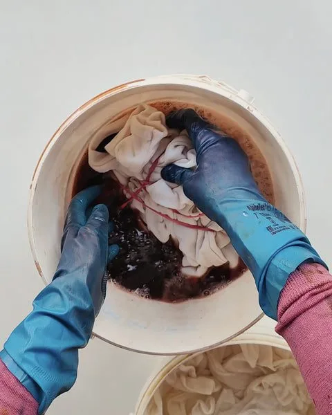
Rinse, rinse, rinse
After you take your piece out of the dye bath, don't open it immediately. Squeeze out the fabric and rinse it thoroughly. If you opened it before rinsing, the dye would muddy the white background in the rinsing process, and we don't want this intricate pattern to get less contrasted, do we?
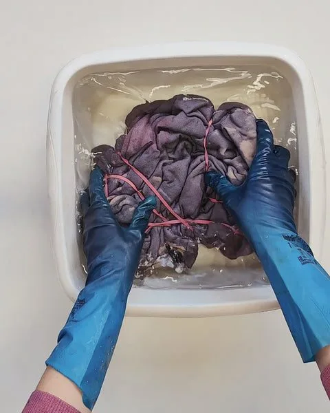
Open and rinse again
Now the most exciting part — it's time to reveal the pattern. Once opened, rinse again to remove all the loose particles caught up between the creases. It might take a few buckets of water to get to the point where the color doesn't bleed anymore. Hang up to dry and wear with pride.
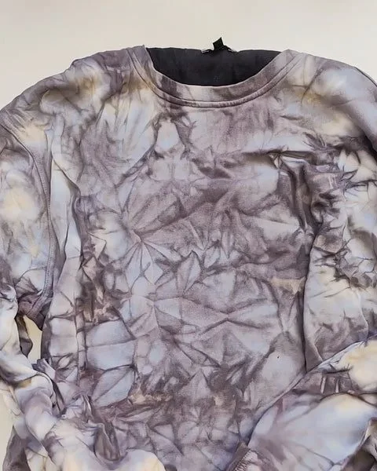
Final look
Here's my sweatshirt, dyed with iron and cutch. It's XXL, 100% cotton, and unisex. I also upcycled two more pieces last week; the photos are below.
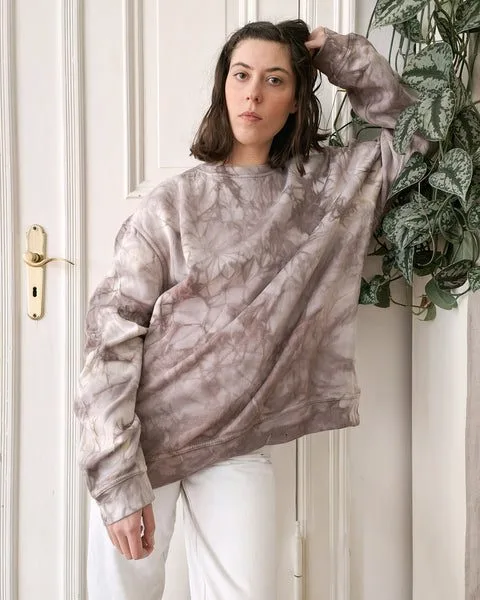
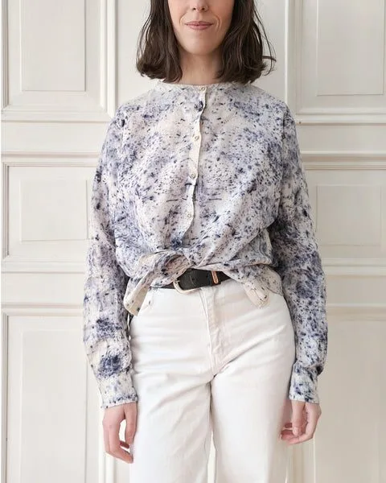
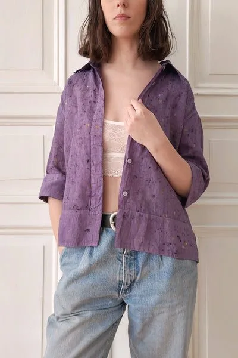
I am planning on upcycling more unique finds this year and sharing my dyeing adventures with you. If there's any process that keeps you awake at night, let me know and I will see if I can record it for you.
May you find joy in giving pre-loved items a chance to shine.
Until next time,
Ania